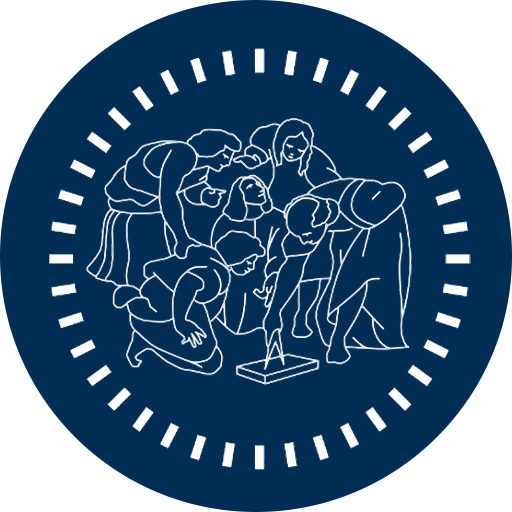
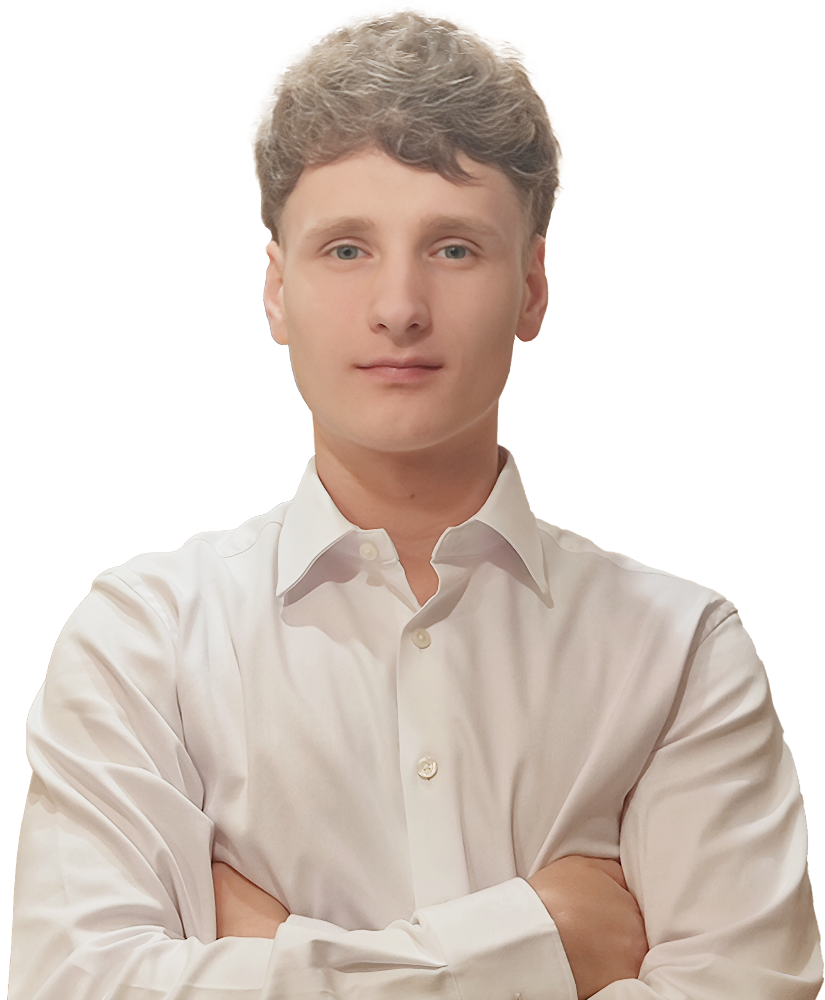
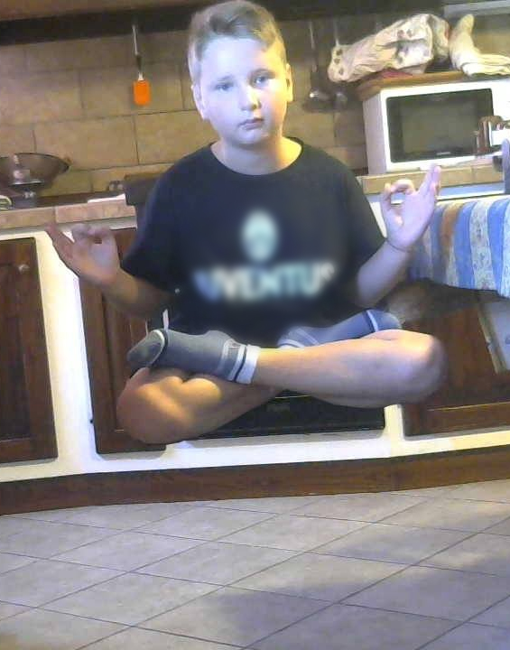
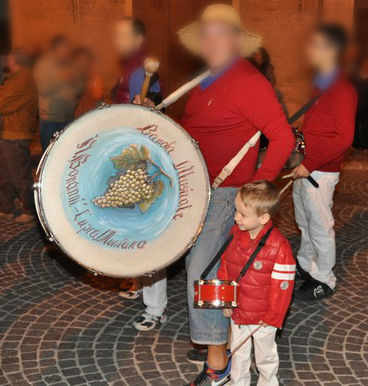

Sono nato e cresciuto a Cupramontana e, fin da bambino, ho sempre sentito l’esigenza di esprimermi, inventare, costruire. Il mio sogno era chiaro: diventare uno youtuber di successo. Quell’idea mi faceva brillare gli occhi perché mi permetteva di unire le mie passioni: parlare davanti alla telecamera, raccontare qualcosa di mio e dare forma a ogni video partendo da zero.
Il 10 agosto 2015, a nove anni, ho pubblicato il mio primo contenuto. È stato l’inizio di un’avventura durata tre anni, durante i quali ho caricato 213 video, tutti ancora online. Registravo gameplay, spiegavo curiosità storiche con mio fratello, realizzavo tutorial di magie, esperimenti e montaggi video. Creavo tutto con i mezzi che avevo e con quello che riuscivo ad apprendere da solo. Ho iniziato a usare i primi programmi di editing, mi occupavo delle grafiche e cercavo di migliorare passo dopo passo. Non era esclusivamente un passatempo: stavo imparando a creare contenuti e a strutturare un progetto personale con una cadenza settimanale.
In terza media, mentre molti mi consigliavano il liceo scientifico, io avevo già scelto Informatica. Sentivo che il mio futuro sarebbe stato lì, e volevo imparare a programmare. Per me il codice non era solo tecnica, ma un mezzo per sviluppare qualcosa che unisse logica, utilità e immaginazione.
Fuori dall’orario scolastico, spinto dalla curiosità, mi avvicinavo sempre di più al design. Alternavo Fusion 360 a esercizi su “Figma”, ma soprattutto trascorrevo ore su Photoshop, sperimentando, provando e rifacendo da capo. Mi divertiva creare, ma anche cercare di capire come potessi realizzare qualcosa che avesse un aspetto professionale — che fosse un’interfaccia, un logo o una locandina.
Era un modo diverso di esprimermi, ma complementare alla programmazione: il codice mi dava struttura, il design libertà. E io avevo bisogno di entrambi.
Con l’arrivo delle superiori è cambiato il mio modo di stare al mondo: dopo anni trascorsi sui social, ho sentito il bisogno di staccarmi e concentrarmi su me stesso. Non era un rifiuto, ma un’evoluzione. Ho iniziato ad allenarmi, a studiare con più consapevolezza, a sviluppare progetti personali che non sentivo il bisogno di condividere, ma che mi aiutavano a crescere e a migliorarmi davvero.
Oggi continuo a muovermi tra codice e design, tra tecnologia e creatività. Ma soprattutto continuo a effettuare ciò che mi viene naturale: imparare, cercare, creare. A modo mio.

I primi due anni al “Marconi Pieralisi” sono stati in parte condizionati dalla pandemia: molte lezioni erano a distanza e le materie poco specifiche. Solo dal terzo anno il percorso è diventato più stimolante, grazie a materie come Informatica, Sistemi e Reti, TPSIT e Intelligenza Artificiale. L’AI, in particolare, mi ha affascinato per il suo approccio basato su logica e modelli in continua evoluzione.
Accanto allo studio tecnico, ho dato spazio alla cultura umanistica: l’educazione civica, che univa diritto, attualità e ambiente, mi ha aiutato a sviluppare il pensiero critico e a osservare le situazioni da altri punti di vista.
Nel quarto anno mi sono candidato come rappresentante degli studenti. Sono stato eletto e ho vissuto quell’esperienza con grande impegno. È stato un ruolo complesso che mi ha insegnato cosa significhi esporsi e rappresentare gli altri anche nei momenti più delicati.
Tra le esperienze più formative ci sono state le due edizioni dell’Hackathon Innova Young di Ancona. Nel 2023 ero il più giovane e ho curato tutta la parte visiva del progetto. Nel 2024 sono stato team leader: ho gestito il gruppo, preso decisioni rapide e imparato a guidare davvero. In entrambe le edizioni abbiamo raggiunto il terzo posto.
Se potessi tornare indietro, frequenterei questa scuola altre cento volte. Ho anche avuto la fortuna di trovarmi subito bene con la mia classe, un gruppo ricco di personalità diverse con cui condividere ogni esperienza. A fare la differenza sono stati anche i professori: disponibili, appassionati, capaci di trasmettere entusiasmo e rendere interessante anche ciò che all’inizio sembrava lontano. Non è scontato trovare docenti che credano in quello che insegnano e ti spingano a dare il meglio, è anche grazie a loro se questi anni sono stati così pieni, significativi e belli da vivere.
La musica non è soltanto una passione: è parte integrante della mia quotidianità, mi accompagna da sempre, mi aiuta a concentrarmi, a liberare la mente e a dare ritmo anche alle giornate più intense. Ne ascolto in grandi quantità, ogni volta che ho le cuffie a portata di mano. Non mi lego a un genere fisso: passo con naturalezza dall’elettronica sperimentale al rap, dal pop internazionale ai suoni più alternativi e contaminati. Amo sorprendermi, scoprire nuovi linguaggi sonori, ma anche tornare a quegli album che diventano casa in determinati periodi della mia vita.
Adoro l’energia dei concerti: appena posso assisto a performance dal vivo, perché sul palco la musica diventa esperienza condivisa, tangibile, reale. Vederla materializzarsi mi ricorda ogni volta perché ho iniziato a suonare.
Ho iniziato a studiare musica a quattro anni, iscrivendomi al corso del Corpo Bandistico Don N. Bonanni di Cupramontana; a sei anni ho abbracciato la batteria. È sempre stato il mio strumento: quello con cui mi sento più libero di esprimermi. Nel tempo ho continuato a suonare in vari contesti: laboratori, esibizioni, piccoli gruppi e, soprattutto, all’interno dello stesso corpo bandistico con cui collaboro tuttora.
Negli ultimi anni questa passione è diventata qualcosa da condividere. Oggi affianco gli insegnanti del corso musicale come educatore, animatore e docente di percussioni, sia durante il centro estivo sia nei corsi annuali. Lavoro con bambini e ragazzi, cercando di trasmettere non solo le basi tecniche, ma soprattutto l’entusiasmo e il rispetto per ciò che la musica può offrire: ascolto, coordinazione, spirito di squadra, creatività.
Assumere il ruolo di guida mi ha permesso di scoprire un lato nuovo di questa passione. Una delle esperienze più emozionanti è stata vedere i miei allievi esibirsi al saggio finale. Provavo molta ansia, sentivo la responsabilità del momento, ma loro sono stati straordinari! Hanno suonato con concentrazione, coraggio e gioia, ed è stato meraviglioso vederli riuscire in ciò che avevamo preparato insieme. Ne sono profondamente orgoglioso: quella sera ha consolidato ulteriormente il mio legame con la musica e con l’insegnamento.

Per molti anni ho immaginato il mio futuro a Milano, convinto che avrei studiato e costruito la mia carriera lì. L’idea di iscrivermi a Industrial Design era nata a quattordici anni e, nel tempo, era diventata un obiettivo concreto. Quest’anno ho sostenuto il test di ammissione al Politecnico di Milano per Industrial Design e a Lecco per Interaction Design, persuaso che entrambe potessero rappresentare un’evoluzione coerente del mio percorso.
La graduatoria di Industrial Design è uscita per prima e, rientrando nei posti disponibili, mi offriva l’opportunità di immatricolarmi subito. Eppure dentro di me era maturato un cambio di rotta: i miei interessi si stavano orientando verso un design focalizzato sull’esperienza, sulla relazione tra esseri umani e tecnologia, sulla costruzione di interazioni efficaci. Ho rinunciato a quella opportunità, con un po’ di rischio ma con altrettanta convinzione, sperando di rientrare nella graduatoria di Interaction Design. Fortunatamente, è andata come desideravo.
Il corso che frequenterò a Lecco è interamente in inglese e ancora giovane, il prossimo sarà soltanto il secondo anno di attivazione. Proprio per questo mi affascina ancor di più: è un percorso dinamico, proiettato verso il futuro, che integra tecnologia, creatività, progettazione e attenzione per le persone, tutti elementi in cui mi riconosco.
Durante la visita al campus ho trovato un ambiente subito accogliente: moderno, curato e, soprattutto, tranquillo. Lecco mi ha trasmesso equilibrio, ben distante dalla frenesia di Milano, e credo che questo mi aiuterà a vivere l’università con maggiore serenità, profondità e produttività. Il percorso inizierà a settembre, ma sono già entusiasta: spero che rappresenti il contesto giusto per crescere, imparare e mettermi alla prova in ciò che più mi appassiona.
Guardando ancora oltre, mi immagino a fondare qualcosa di mio. Non ho ancora le idee chiare sulla forma (uno studio, un progetto indipendente, o forse altro che oggi non so definire) ma so che mi piacerebbe esserne il creatore, costruirlo da zero e sostenerlo nel tempo, quasi come si fa con un figlio. Ciò che conta per me è avere qualcosa da cui non voglio solo ottenere un profitto, ma di cui desidero prendermi cura con serietà, creatività e profondo senso di responsabilità.